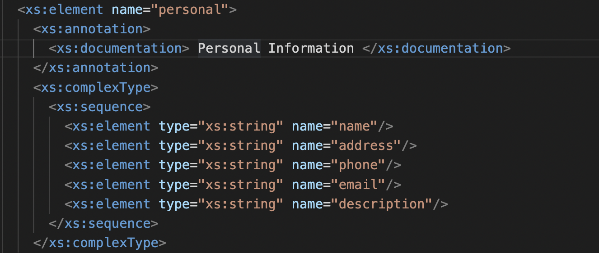
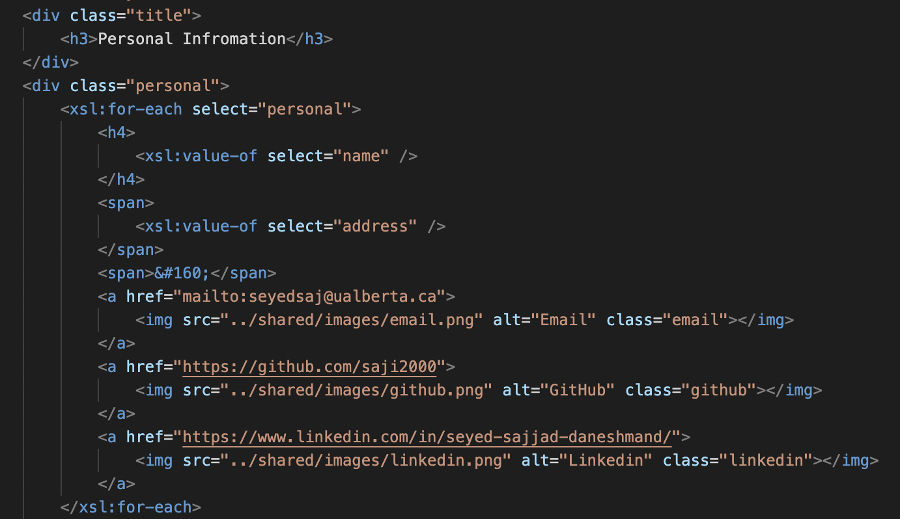
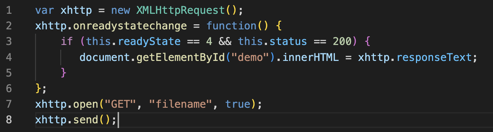

Menu
Web Development Tutorial
Unit 3 (XML and Ajax)


Extensible Markup Language (XML) is a markup language and file format for storing, transmitting, and reconstructing arbitrary data. It defines a set of rules for encoding documents in a format that is both human-readable and machine-readable.
Most important aspect of using XML is that it is reusable, compared to HTML it saves a lot of time while developing a web page
Different Elements:
For example in figure 1, "Edmonton, AB, Canada" is a text so <address> has a text content
<personal> has an element content since it entails other elements. And <xml> has a "version" attribute
XSD (XML Schema Definition), a recommendation of the World Wide Web Consortium (W3C), specifies how to formally describe the elements in an Extensible Markup Language (XML) document. It can be used by programmers to verify each piece of item content in a document, to assure it adheres to the description of the element it is placed in.
XSLT (eXtensible Stylesheet Language Transformations) is the recommended style sheet language for XML. XSLT is far more sophisticated than CSS. With XSLT you can add/remove elements and attributes to or from the output file. You can also rearrange and sort elements, perform tests and make decisions about which elements to hide and display, and a lot more. XSLT uses XPath to find information in an XML document.
Ajax is a set of web development techniques that uses various web technologies on the client-side to create asynchronous web applications. With Ajax, web applications can send and retrieve data from a server asynchronously (in the background) without interfering with the display and behaviour of the existing page. By decoupling the data interchange layer from the presentation layer, Ajax allows web pages and, by extension, web applications, to change content dynamically without the need to reload the entire page.
The XMLHttpRequest object can be used to request data from a web server. It's very useful since you Update a web page without reloading the page. An example of this:
